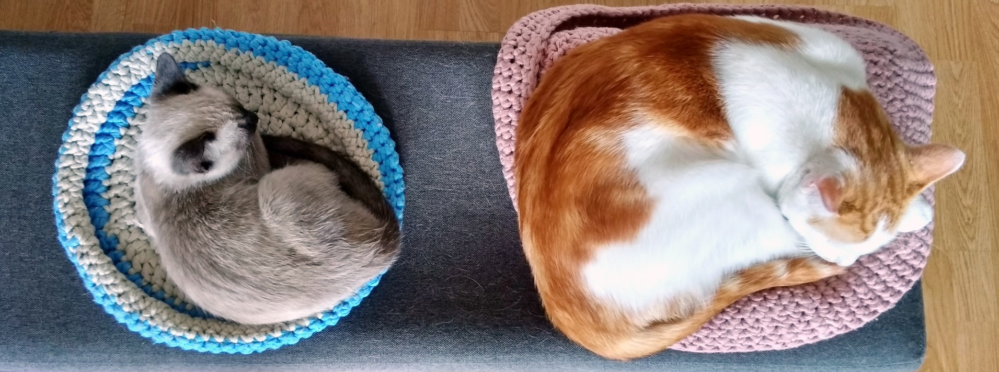
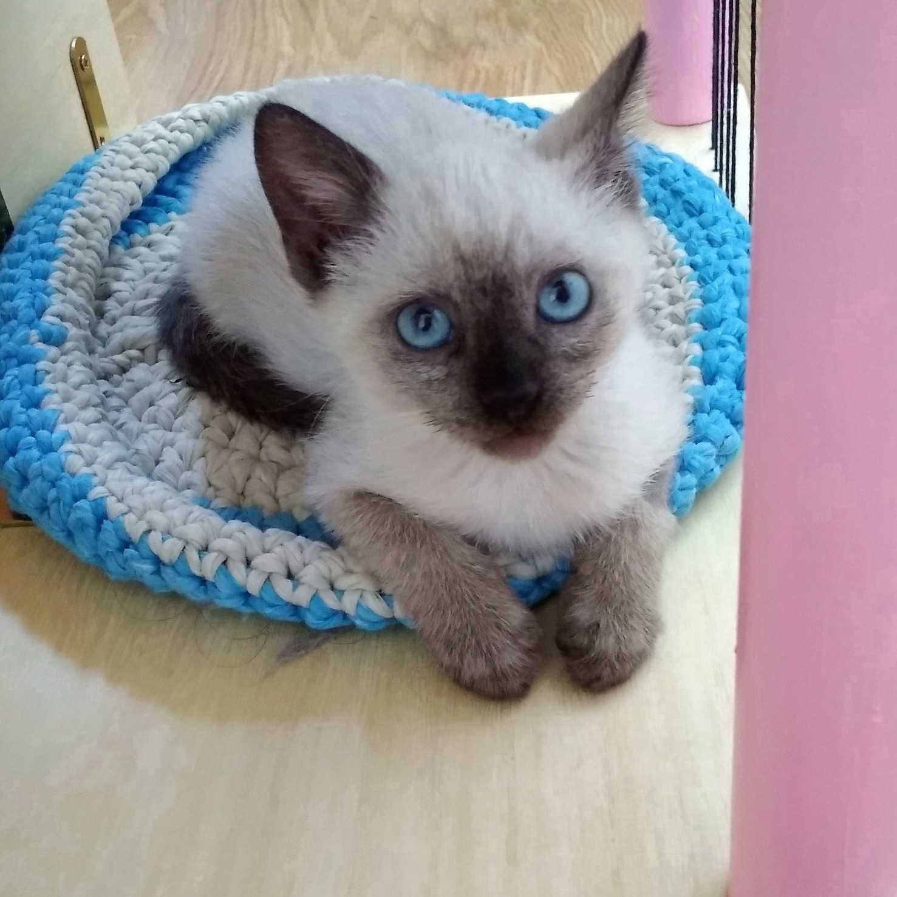
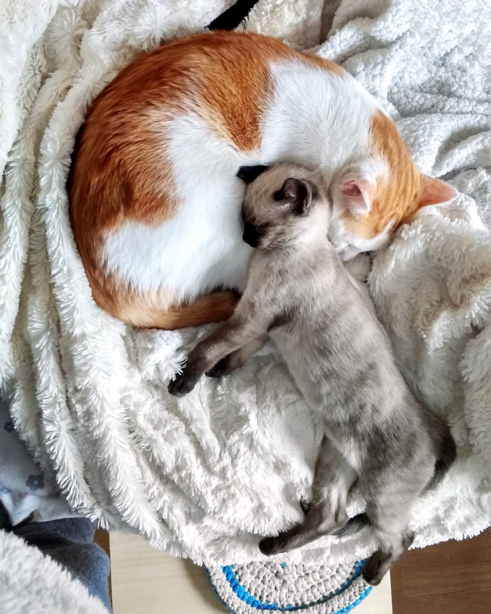

Bienvenida Dulcinea
¡Hola! Tenemos una nueva gatita en la familia desde hace un mes, se llama Dulcinea. La experiencia gatuna con Quijote fue maravillosa desde el principio, por eso y por la idea de hacerle compañía nos decidimos por adoptar otra gatita. En este post Isa os va a contar cómo hicieron la introducción entre Quijote y Dulcinea para que su relación fuera lo mejor posible. Fue al final del verano cuando nos pusimos en contacto con una protectora (Actüa gatos) y justo la noche que llegábamos de nuestras últimas vacaciones de verano, nos dijo que había aparecido en la puerta de su casa una gatita que debía tener 1 mes y medio y que podría ser perfecta para nosotros.
Preparación de la casa
Para nosotros era importantísimo hacer la presentación entre los dos gatos adecuadamente, ya que no queríamos arriesgarnos a amargarle el carácter al bueno de Quijote. Antes de que llegara preparamos un cuarto de la casa con todo lo necesario (arenero, rascador, comedero, camita...) para que ella se sintiera segura y pudiera coger confianza poco a poco, al mismo tiempo que Quijote no se sintiera amenazado en su territorio.
Primeros días
Para realizar la introducción de gatos nos empapamos mucho del canal de youtube de Jackson Galaxy, el típico encantador de gatos estadounidense y del canal de Mascotas y familias felices, un veterinario español que da súper buenos consejos. En general, las diferentes teorías de introducción de gatos coinciden en que se han de hacer muy poco a poco, enfatizando al principio que se conozcan por el olor, esto se consigue evitando el contacto visual y haciendo cambio de pertenencias de manera regular, también les cambiábamos los cuartos, para que se fueran acostumbrando al ‘terreno’ del otro, pero sin llegar a conocerse. Las señales que vivimos estos primeros gatos nos parecieron positivas y nos hicieron avanzar rápidamente a la última fase antes de juntarlos definitivamente. Esta fase consiste en estar con los dos en el mismo espacio a pequeños ratitos mientras les distraes a los dos de manera independiente o bien jugando o comiendo o con caricias para evitar que se miren fijamente y comience una pelea. Fue en esta fase donde nos quedamos atascados, nos resultaba muy díficil, si no imposible, mantenerlos distraídos, la curiosidad les podía, y si les dejábamos mirarse, había bufidos, orejas hacia abajo y otras señales de que el encuentro no iba bien. Finalmente, nos dimos cuenta de que éramos capaces de mantener la atención de Quijote con un juguete que normalmente tiene prohibidísimo, los coleteros, y no nos agobiamos porque Dulcinea simplemente estuviera pendiente de él. Así conseguimos que fueran ganando confianza poco a poco mientras íbamos alargando los encuentros. Esta última fase fue la que más nos costó y había días que costaba ver la luz al final del túnel.
Actualidad
Finalmente, esta lenta introducción está teniendo su recompensa, y en la última semana del mes ya les estamos juntando todo el día, permaneciendo sólo separados por la noche. Aún hay algún desencuentro de vez en cuando, también hay que tener en cuenta que Dulcinea es una cachorro y sólo piensa en jugar, mientras que Quijote es un gato amoroso que sólo piensa en lamerla de arriba a abajo, pero en general parece que la relación promete y cada día se van acercando y queriendo un poquito más. ¡Esta última semana hemos podido disfrutar de su primera siesta juntos y os podéis imaginar lo felices que nos hizo!